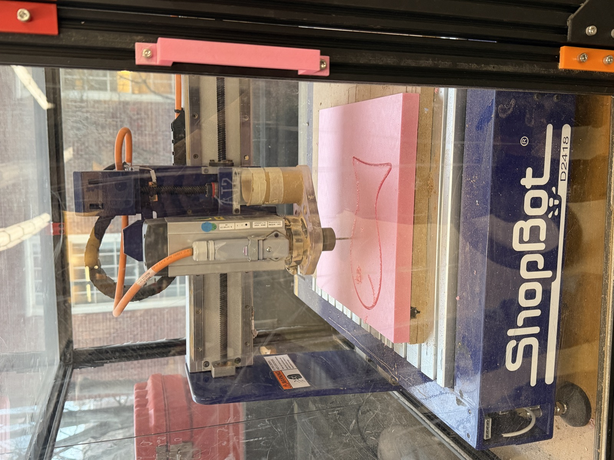
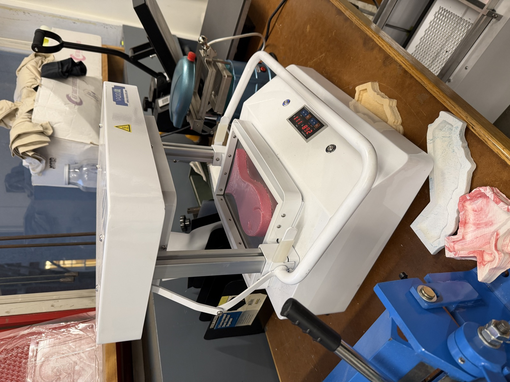
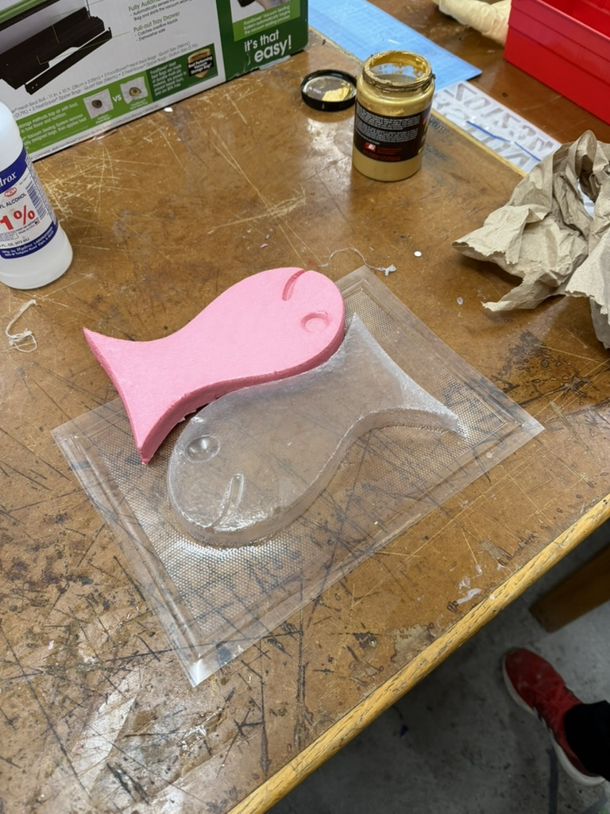
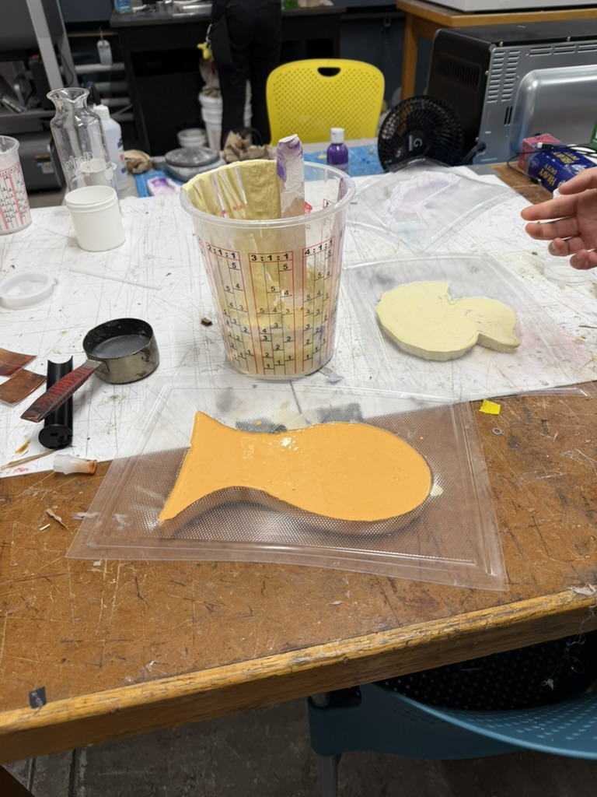
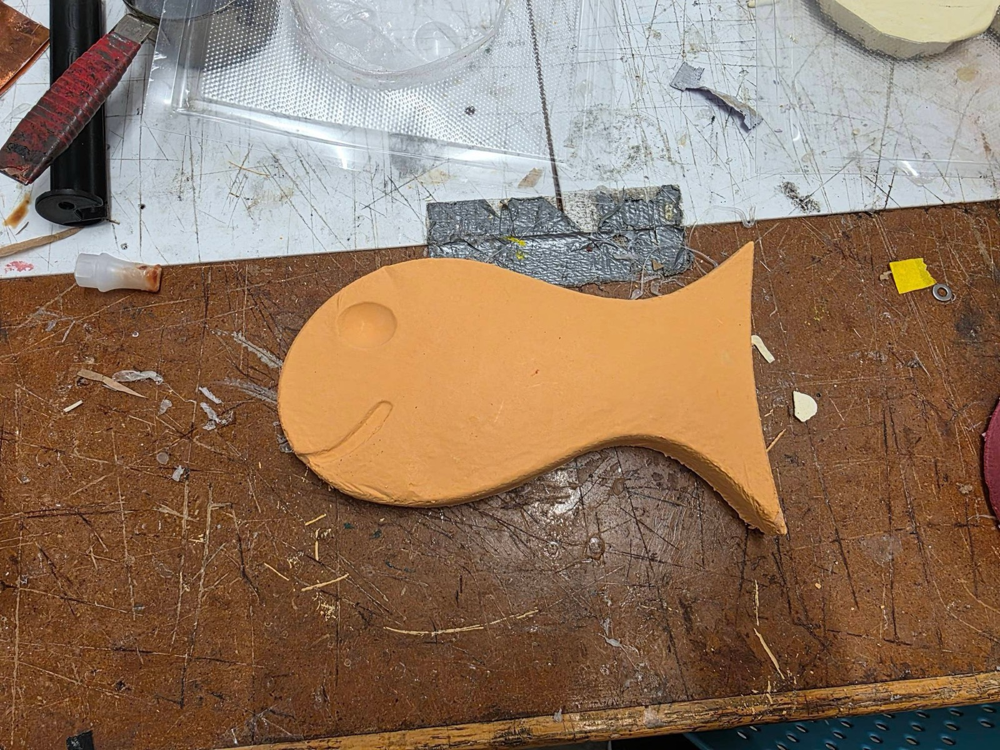

This week for CNC milling, I wanted to make something related to geography. I decided to mill a map of the world out of foam and turn it into plaster!
Before tackling my own CNC project, I wanted to get some practice in with something simpler. My lab group and I worked together on a small goldfish design to CNC out of foam, which we created in Fusion 360. Working on it, I learned which file types Aspire allows to generate toolpaths for the CNC bit and I was surprised by how simple those files had to be. The software really just needs a vectorized image, like a DXF or SVG, rather than a full 3D CAD model. Bobby helped us cut the goldfish out of foam, and we finished it with a mixture of plaster and red and yellow paint, leaving us with an orange goldfish we named Bob.





I enjoy looking at maps so I thought making a physical version of the world map with the CNC sounded cool. I started by finding an image of a world map on Google. I'd heard from a classmate that a CNC toolpath needs a thick outline so that the 1/16" bit on the ShopBot can trace it cleanly, so I processed the image in ChatGPT to thicken the lines beyond the original. I then converted the PNG into an SVG using FreeConvert.
In hindsight, I don't think I needed to thicken the lines at all, since I ended up using a 0.25" bit (which is a pretty large drill bit). I used this bit because I learned that the bit should be at least as long as the material is thick. Because the foam board I was using was thicker than a typical MDF board, Victor told me it was important to use a longer bit so it could cut all the way through.
I then secured the foam board with double-sided tape and started my first cut. The first mistake I made was measuring the board thickness by eyeballing it with a ruler instead of using calipers. As a result, I overestimated how thick it was. Because the cut depth was set for that overestimate, the bit went a bit too deep and started cutting into the MDF sacrificial layer underneath, so I had to stop the CNC.


For my second attempt, I measured the board properly with calipers (which ended up being about 0.9" thick) which reduced how much the bit cut into the MDF sacrificial board. I also set the Z cut depth to 0.4" on the outer lines and 0.2" on the inner lines, to give the map a varied texture.
One thing that turned out to matter a lot was being clear in the Aspire software about whether each toolpath cut inside the line, outside the line, or directly on it. I cut the inner lines on the edge and the outer lines inside the edge, because there wasn't enough room along the edges for the large bit to trace them on the outside.


This combination cost me some precision. The inner and outer toolpaths sometimes overlapped, and in places the foam was too thin to stand on its own after being cut by both, so a few of the more delicate landmarks broke away. In some spots the CNC was cutting nothing at all. The bit "thought" material was there, but it had already been removed.
Still, I ended up with a nice CNC'd world map in the foam, and I was pleased with the result. Foam is one of my favorite materials to cut because it machines easily and, because it's so light, there's not much danger involved. With the map cut, I moved on to vacuum forming.
The first thing I noticed when I put my CNC'd board on the vacuum former was that the vacuum former couldn't accommodate the whole board. It has a max dimension it can handle. I trimmed a few extraneous edges off my world map with a box knife to make it fit.

I heated the plastic to around 200°C, which was the point at which it drooped enough to become moldable. Once it had formed over the foam board, I let the plastic cool and removed the mold. A few bits of foam got stuck in the mold, and I carefully removed as many as I could so they wouldn't disrupt the plaster cast. When removing these bits, I was using a box knife (I don't recommend doing this) and I accidentally cut into the mold at one point. This was bad because later on, I will add a liquid plaster solution into the mold (and as expected, plaster started to drip from the mold). So note to future self and others reading this to be careful not to make any holes in your mold!


To cast the plaster, I mixed dry stone casting plaster with water at roughly a 2:1 ratio of plaster to water. I found that the exact ratio didn't matter too much in practice since water evaporates, and you can always add more plaster if the mix is too thin. One thing I learned was to mix the plaster very thoroughly, since unmixed chunks can end up in the cast. I then made sure to fully cover the mold, then waited for it to set.


The next day, I came back, removed the plaster from the mold, and was left with a fully set plaster world map that I was really happy with. Some of the foam bits that had stuck in the mold ended up embedded in the plaster too, but that was just part of the process. Next time I might use MDF or another material that leaves less residue behind.